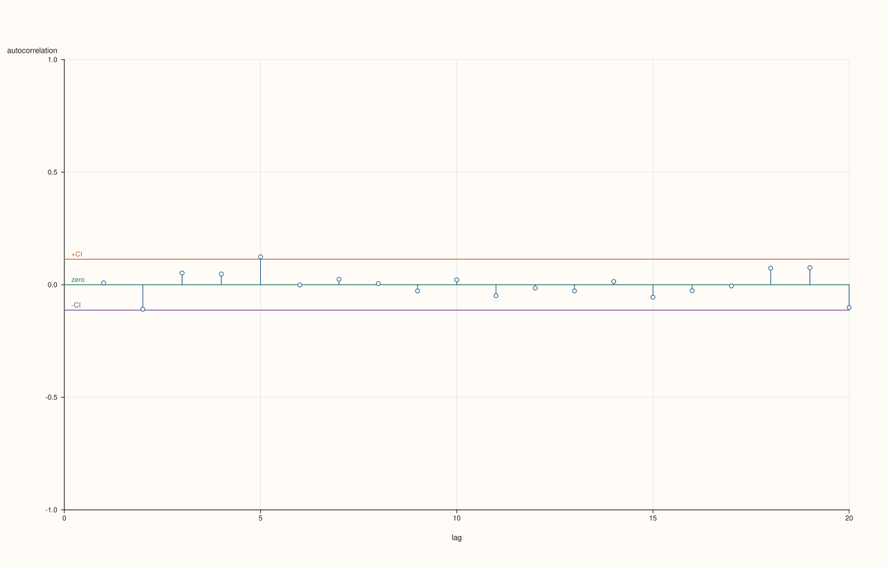

pluss::subsp::stats::ts::plot_residuals¶
Draws the residuals of a model against time into a pluss::pl::Studio figure.
Signature¶
pluss::pl::Studio& ts::plot::residuals(pluss::pl::Studio& studio, const pluss::Series& residuals, const ts::plot::ResidualPlotOptions& options = {}, pluss::codem::Config cfg = {});
What It Does¶
Draws the residual series as a line against the time index, with a zero line. For a well-specified model the residuals scatter evenly around zero with no pattern; look for trends, changing spread (volatility clustering) and outliers. Pair it with the autocorrelation plot of the residuals.
Parameters¶
pluss::pl::Studio& studioThe figure to draw into.
const pluss::Series& residualsThe residual series.
const ts::plot::ResidualPlotOptions& optionsZero line and line width; see
ResidualPlotOptions.pluss::codem::Config cfgOutput configuration of the payload arrays.
Returns¶
The same Studio.
Practical Examples¶
Example 1¶
Plot the residuals of an AR(1) model and the autocorrelations of the same residuals: the first scatters around zero, the second stays inside the band.
#include <pluss/ma.h>
#include <cmath>
#include <cstdlib>
#include <iomanip>
#include <iostream>
#include <string>
#include <vector>
#include <pluss/pl/studio.h>
namespace ts = pluss::subsp::stats::ts;
using pluss::Series;
const auto f64 = pluss::Config{}.with_dtype(pluss::ScalarType::Float64);
void show(const char* label, const Series& s) {
std::cout << std::left << std::setw(14) << label << std::right << std::fixed << std::setprecision(4);
for (double v : s.to_vec<double>()) std::cout << std::setw(9) << v;
std::cout << "\n";
}
std::vector<double> noise(int n) {
std::vector<double> e(n);
for (int i = 0; i < n; ++i) {
double u = std::sin(12.9898 * (i + 1.0) + 78.233) * 43758.5453;
u -= std::floor(u);
e[i] = u - 0.5;
}
return e;
}
Series ar1(int n, double phi) {
const auto e = noise(n);
std::vector<double> x(n);
double carry = 0.0;
for (int i = 0; i < n; ++i) {
carry = phi * carry + e[i];
x[i] = carry;
}
return pluss::make_series(x, {n}, f64);
}
Series walk(int n) {
const auto e = noise(n);
std::vector<double> x(n);
double sum = 0.0;
for (int i = 0; i < n; ++i) {
sum += e[i];
x[i] = sum;
}
return pluss::make_series(x, {n}, f64);
}
int main() {
const Series y = ar1(300, 0.7);
const auto residuals = ts::Arima::fit_mle(y).infer(y);
pluss::pl::Studio figure("residuals", pluss::pl::Theme::paper());
ts::plot::residuals(figure, residuals);
pluss::pl::Studio correlogram("residual acf", pluss::pl::Theme::paper());
ts::plot::CorrPlotOptions options;
options.max_lag = 20;
ts::plot::acf(correlogram, residuals, options);
const char* dir = std::getenv("PLUSSMA_GUIDE_ASSETS");
if (dir != nullptr) {
figure.save_svg(std::string(dir) + "/ts_residuals.svg");
correlogram.save_svg(std::string(dir) + "/ts_residual_acf.svg");
}
std::cout << "two figures drawn\n";
}
Output
two figures drawn

